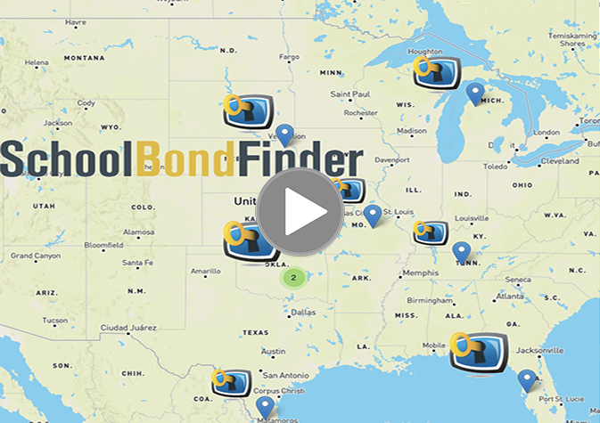
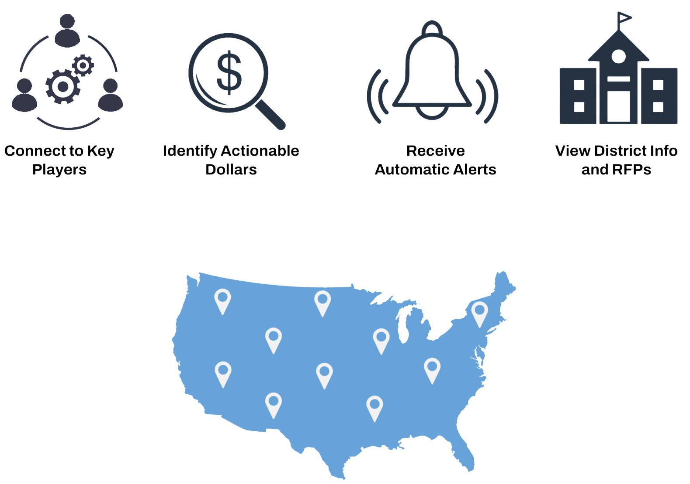

Unlocking Opportunities for K-12 Solution Providers

Opening Doors to the Billions of Dollars in K-12 Bond Funded Capital Projects.

SchoolBondFinder is the first comprehensive, online database tracking K12 bond–funded capital improvement projects in the United States.
SchoolBondFinder enables education partners the opportunity to offer the right solutions at the right time for a district, and allowing districts to share information with each other about their school bond initiatives.
SchoolBondFinder enables education partners the opportunity to offer the right solutions at the right time for a district, and allowing districts to share information with each other about their school bond initiatives.
CAPITAL IMPROVEMENT STATISTICS
K-12 Schools are Planning
K-12 Schools are Planning
BOND INITIATIVE HIGHLIGHT
New Jersey Governor Phil Murphy Signs Legislation to Award Schools with Securing Our Children's Future Bond Act Grants
New Jersey Governor Phil Murphy Signs Legislation to Award Schools with Securing Our Children's Future Bond Act Grants
The grants will fund school security, water infrastructure improvements, and enhancement of career and technical education (CTE) in county vocational-technical school districts and county colleges. The first round of grants, will total $317.2 million and be distributed by the New Jersey Department of Education (DOE) and the Office of the Secretary of Higher Education (OSHE). Funds will be disbursed on a rolling basis contingent on final grant revisions and recipient submissions of reimbursement requests.
"[This investment] will lead to safer school facilities, ensure clean water, and help county vocational-technical schools grow programs to provide career readiness skills that students need.”
- Dr. Angelica Allen-McMillan, New Jersey Acting Commissioner of Education.
- Dr. Angelica Allen-McMillan, New Jersey Acting Commissioner of Education.
Ready to Explore?
5-Minute Tour
Full Demo